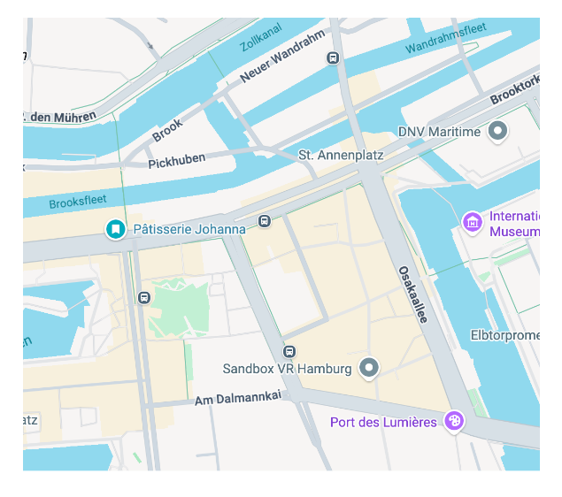
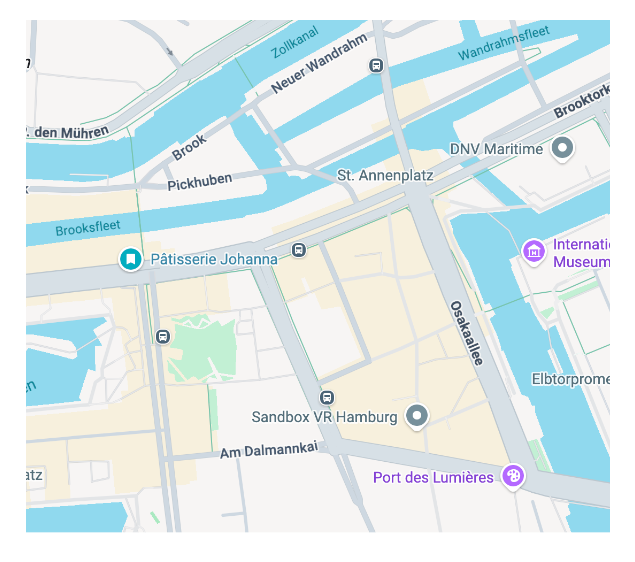
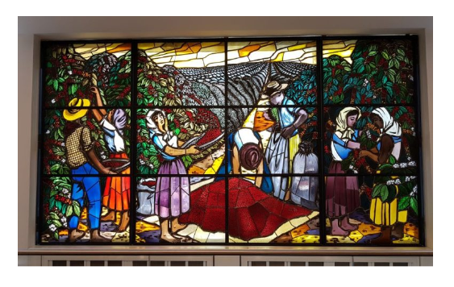

Eine Tassee Kaffee ... so unscheinbar. Überall verfügbar. Auch in der Speicherstadt, HafenCity.... überall Cafes.
Doch dahinter steckt mehr. Wie kam es dazu?
Eine Tassee Kaffee ... so unscheinbar. Überall verfügbar. Auch in der Speicherstadt, HafenCity.... überall Cafes.
Doch dahinter steckt mehr. Wie kam es dazu?
 Das Buch "Kololianes Hamburg" gibt Einblick. Tour führt durch das "Kaffee Zentrum", als solches im Grunde kaum zu erkennen. Muss man sich zusammensuchen.

Drei Orte:
Das Buch "Kololianes Hamburg" gibt Einblick. Tour führt durch das "Kaffee Zentrum", als solches im Grunde kaum zu erkennen. Muss man sich zusammensuchen.

Drei Orte:
- Neumann Gruppe
- Alte Zentrale (?)
- Kaffeebörse

Börse zeigt Bild, doch so idyllisch war es nicht. Harte Arbeit. Plantagensystem.
 Buch zeigt Hintergründe: Kaffee baut auf Ausbeutung.
auch: Frauenarbeit - Kaffeelesen
Buch zeigt Hintergründe: Kaffee baut auf Ausbeutung.
auch: Frauenarbeit - Kaffeelesen